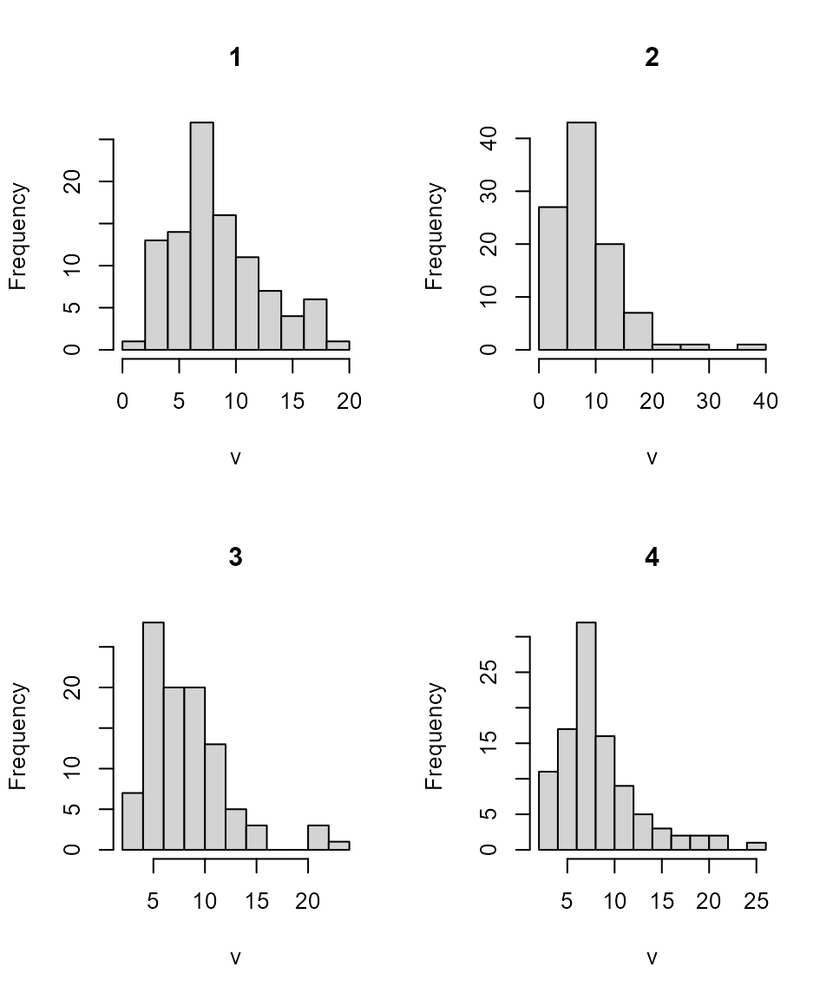
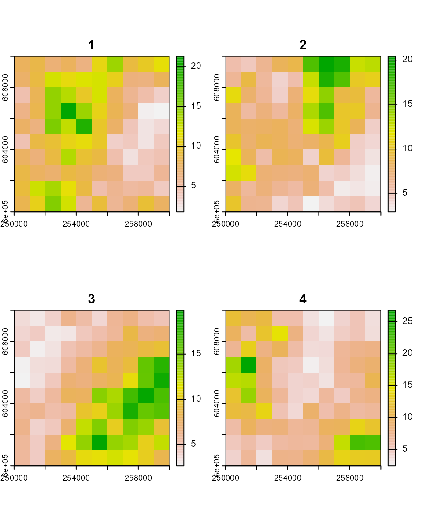

Generates multiple carrying capacity maps based on spatially autocorrelated Gaussian Random Fields (GRFs), with optional correlation between layers.
Arguments
- n
Integer. Number of maps to generate.
- id
A
SpatRasterobject used as a geographic template.- range
Numeric. Spatial autocorrelation parameter passed to the
grffunction.- cor_mat
Optional correlation matrix. If
NULL, maps are generated independently.- qfun
Quantile function to apply to the generated GRFs (default:
qnorm).- ...
Additional arguments passed to the quantile function
qfun.
Value
A SpatRaster object with n layers, each representing a carrying capacity map.
Examples
library(terra)
library(FieldSimR)
# Community parameters
nspec <- 4
nrows <- ncols <- 10
xmin <- 250000; xmax <- xmin + nrows * 1000
ymin <- 600000; ymax <- ymin + ncols * 1000
id <- rast(nrows = nrows, ncols = ncols, xmin = xmin, xmax = xmax,
ymin = ymin, ymax = ymax)
crs(id) <- "epsg:2180"
# Correlation matrix of carrying capacities
cor_mat <- FieldSimR::rand_cor_mat(nspec, -0.5, 0.5, pos.def = TRUE)
#> 'cor_mat' is already positive (semi)-definite, matrix was not altered
cor_mat
#> 1 2 3 4
#> 1 1.0000000 -0.2575874 -0.2555569 -0.2850834
#> 2 -0.2575874 1.0000000 0.1592346 -0.4893887
#> 3 -0.2555569 0.1592346 1.0000000 -0.4530357
#> 4 -0.2850834 -0.4893887 -0.4530357 1.0000000
# Generate and define the distributions and parameters
# of correlated carrying capacity maps
K_map <- K_sim(nspec, id, range = 20000, cor_mat = cor_mat, qfun = qlnorm,
meanlog = 2, sdlog = 0.5)
K_map
#> class : SpatRaster
#> dimensions : 10, 10, 4 (nrow, ncol, nlyr)
#> resolution : 1000, 1000 (x, y)
#> extent : 250000, 260000, 6e+05, 610000 (xmin, xmax, ymin, ymax)
#> coord. ref. : ETRF2000-PL / CS92 (EPSG:2180)
#> source(s) : memory
#> names : 1, 2, 3, 4
#> min values : 1.803381, 2.968255, 2.672162, 2.424431
#> max values : 21.301051, 20.423516, 19.818046, 26.819540
hist(K_map)

plot(K_map)
